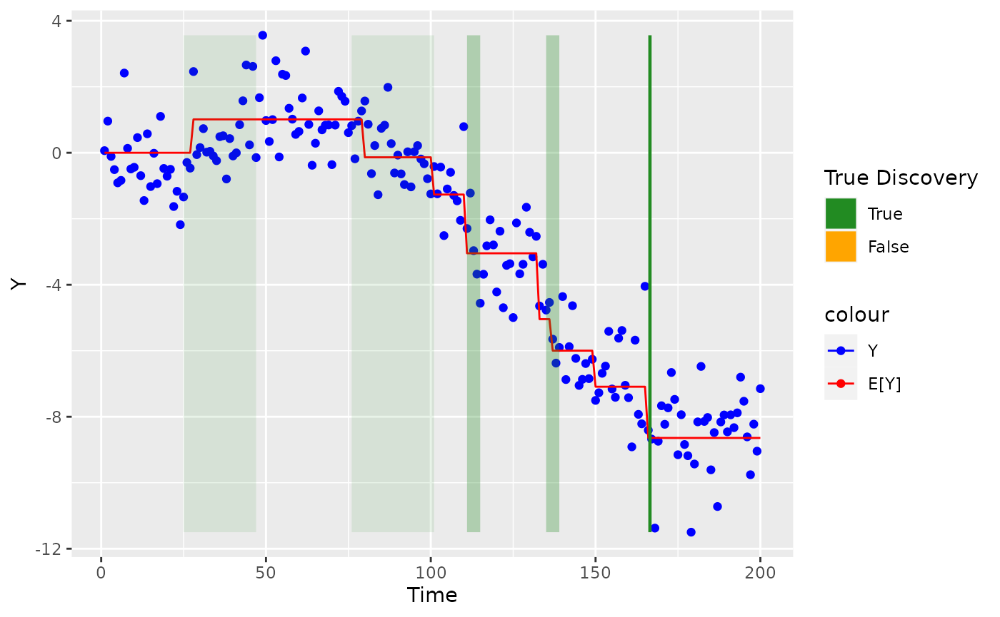

BLiP for change-point detection
2022-03-31
blipr-changepoint.RmdThis vignette illustrates how to use blipr to perform resolution-adaptive change-point detection.
Problem setting
Given time series data \((Y_1, \dots, Y_n)\), suppose we are interested in looking for “change-points”, or times where the stochastic process changes. Often, we can tell that a process has changed, but we cannot discern exactly where it has changed because each observation \(\{Y_i\}\) is noisy. The following synthetic dataset gives one example of this:
library(tidyverse)
#> ── Attaching packages ─────────────────────────────────────── tidyverse 1.3.1 ──
#> ✓ ggplot2 3.3.4 ✓ purrr 0.3.4
#> ✓ tibble 3.1.2 ✓ dplyr 1.0.7
#> ✓ tidyr 1.1.3 ✓ stringr 1.4.0
#> ✓ readr 1.4.0 ✓ forcats 0.5.1
#> ── Conflicts ────────────────────────────────────────── tidyverse_conflicts() ──
#> x dplyr::filter() masks stats::filter()
#> x dplyr::lag() masks stats::lag()
library(blipr)
# Generate synthetic data
set.seed(1234)
n <- 200
data <- blipr::generate_changepoint_data(
n=n, sparsity=0.04, tau2=4
)
df <- data.frame(
Time=c(1:n),
Y=data$y, # observed data
beta=data$beta, # change points
mu=data$mu # mean of Y
)
# Plot data
ggplot(df, aes(x=Time)) +
geom_point(aes(y=Y, color='Y')) +
geom_line(aes(y=mu, color='E[Y]')) +
scale_color_manual(values=c("Y"='blue', 'E[Y]'='red'))Applying BLiP
To detect regions where the true mean of \(Y\) has changed, we first use the bcp package to fit a Bayesian change-point detection model. Then, we can apply BLiP directly on top of the posterior samples.
# Fit Bayesian change point model, running 10 chains of 2K samples each
library(bcp)
#> Loading required package: grid
post_samples <- matrix(nrow=0, ncol=n)
N <- 2000; burnin <- N/10; chains <- 10
for (i in 1:chains) {
bcp_out <- bcp(y=data$y, return.mcmc=T, mcmc=N, burnin=burnin, p0=0.1)
post_samples <- rbind(
post_samples, t(bcp_out$mcmc.rhos[,(burnin+1):(N+burnin)])
)
}
# Shift by one to ensure indexing conventions line up
post_samples <- cbind(
matrix(0, dim(post_samples)[1], 1),
post_samples[,0:(n-1)]
)
# Create candidate groups and apply BLiP
cand_groups <- sequential_groups(samples=post_samples, max_pep=0.5)
detections <- blipr::BLiP(cand_groups=cand_groups)We can plot these detections and check if they are true or false positives.
# True change-points
cps <- which(df$beta != 0)
# Process detections
detection_df <- data.frame(
start=sapply(detections, function(x) {min(x$group)}),
end=sapply(detections, function(x) {max(x$group)}),
true_disc=sapply(detections, function(x) {
length(intersect(x$group, cps)) > 0
}
)) %>% mutate(true_disc=ifelse(true_disc, "True", "False"))
# Plot
ggplot(df) +
geom_point(aes(x=Time, y=Y, color='Y')) +
geom_line(aes(x=Time, y=mu, color='E[Y]')) +
geom_rect(data=detection_df, mapping=aes(
xmin=start, xmax=end + 1,
ymin=min(df$Y), ymax=max(df$Y),
fill=true_disc, alpha=1/(2*(end-start+1)),
),
) +
scale_color_manual(values=c("Y"='blue', 'E[Y]'='red')) +
scale_fill_manual(values=c("True"="forestgreen", "False"="orange")) +
labs(fill='True Discovery') +
scale_alpha(guide='none')
As shown above, BLiP has detected change-points in each of the highlighted regions. In this case, it turns out that BCP + BLiP only made true discoveries.